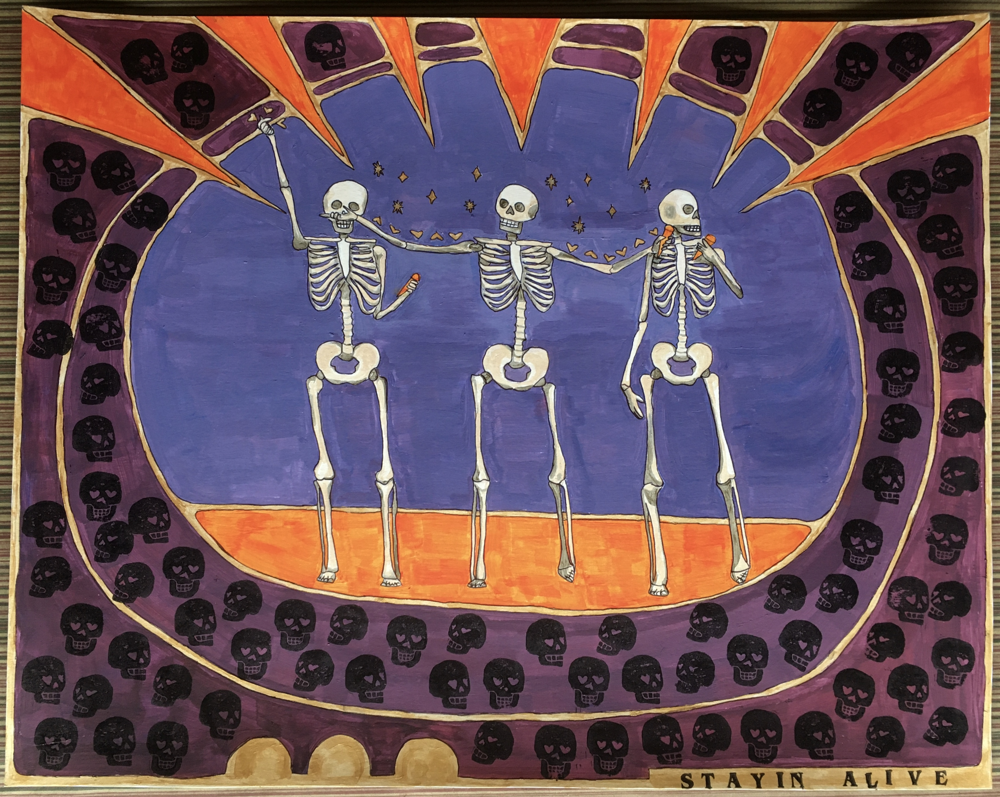
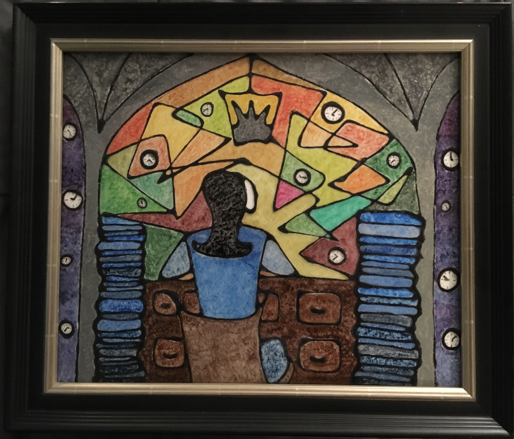
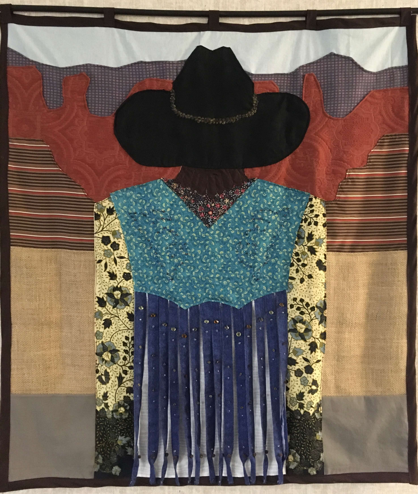
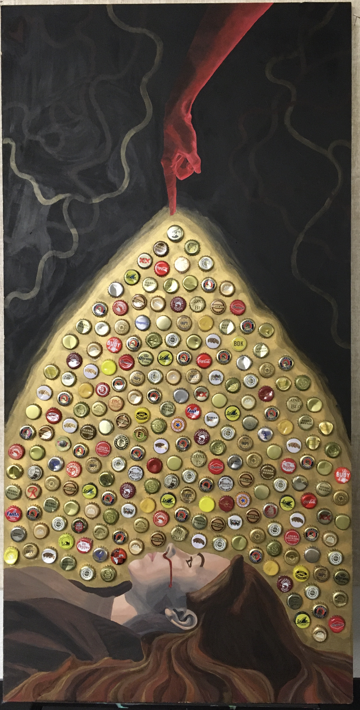
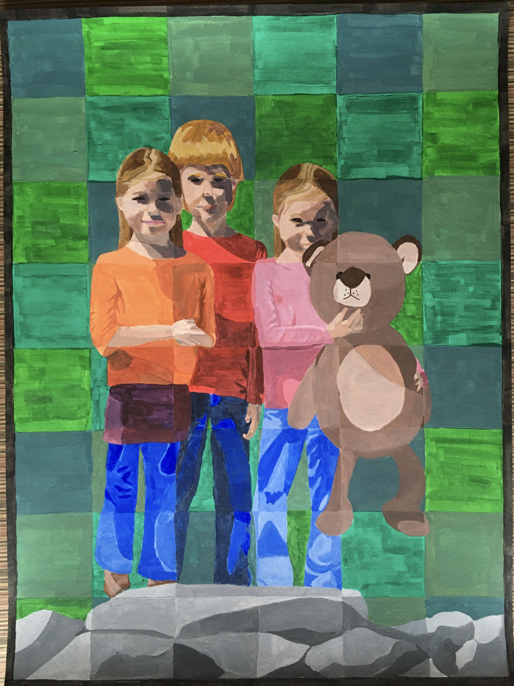
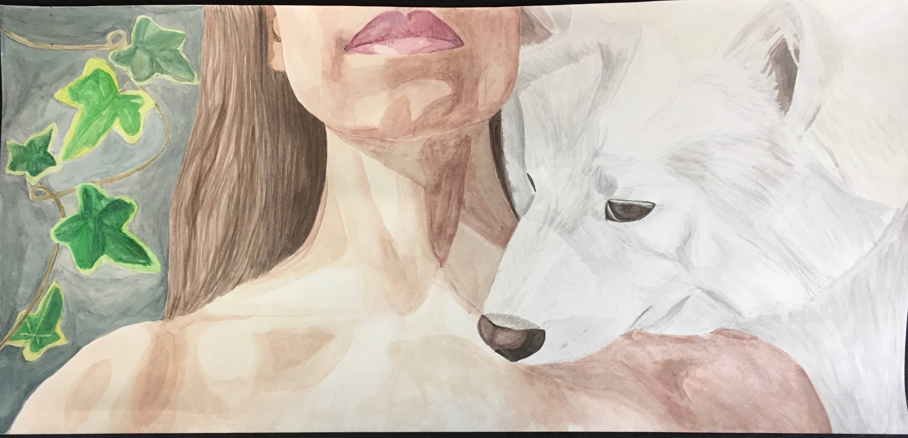

PORTFOLIO

"Mosaic of Person Organizing" / Bottle Caps, Copper Foil, and Hotglue on Plywood, 35 x 35 x 35 cm

"Passion of Many" / Acrylic Paint, Stamp Ink, and Sharpie on Mixed Media Paper / 48 x 38 cm

"Chunk of Time" / Acrylic, Gesso, Elmer's Glue, and Sharpie on Plexiglass / 50 x 52 cm

"Ballroom Dancing" / Fabric, Glass Beads, Yarn, and Thread / 107 x 94 cm

"Get Up" / Acrylic and Bottle Caps on Particle Board / 121 x 70 cm

"Patches of Comfort" / Acrylic Paint on Mixed Media Paper / 46 x 61 cm

"Vulnerable Relationship" / Watercolor on Watercolor Paper / 60 x 29 cm